A database is an organized collection of structured information, or data, typically stored electronically in a computer system.
Selection of DB should be based upon how, when, where and who will use the data. Click on picture below to see db-engines.com ranking.
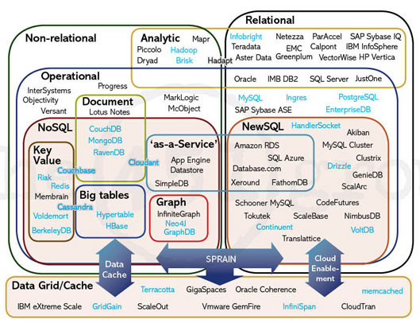
Relational & Non-Relational are the overarching categories of DB's
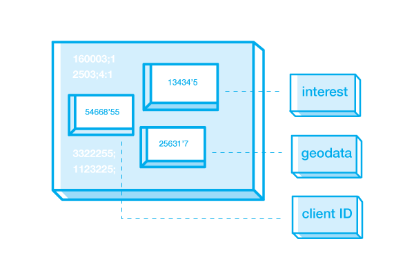
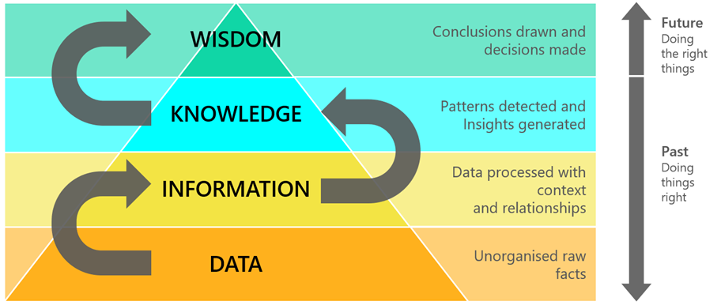
A neighborhood wants to launch a watch program and has hired your team to design its database. They need to track volunteers, incidents, meeting agendas, and an evening watch schedule.
Their website will show three pages:
Your goal: turn this request into the first draft of an ERD in four rounds.
Teams of 3 or 4 | Roles: Interviewer, Recorder, Organizer, Presenter | About 35 minutes
I am the president of the neighborhood association. Write your questions first, then you get to ask me 3.
Write down every answer. Each one is a design decision.
Write one piece of data per sticky note; teams can use one text box per item in draw.io. Aim for at least 25.
first name and last name, not just name.No grouping yet. Quantity first.
VOLUNTEER, not Volunteers. These are your candidate entities. The notes inside are attributes.Minimum data rule: all that is needed is there, and all that is there is needed.
Draw a line between entities that relate. For each line, write one sentence:
A [ENTITY] can [verb] one or more [ENTITY].
Example: A VOLUNTEER can log one or more INCIDENTS.
Exit ticket: List your final entities, the unique attribute for each, and your two best relationship sentences.
Keep your board. We will turn it into business rules and a conceptual model next.
Model: Abstraction of a real-world object or event
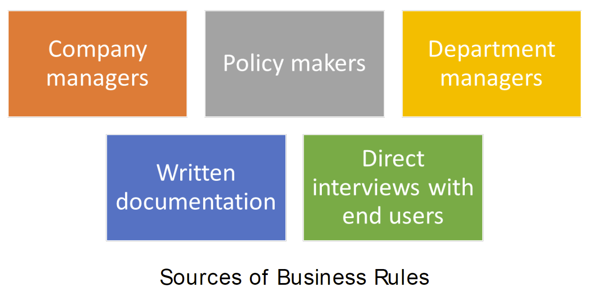
Brief, precise, and unambiguous description of a policy, procedure, or principle.
Some business rule describes a constraint that cannot be shown in the ER diagram
Describe main and distinguishing characteristics of the data
- A community watch group member can submit one or more incidents.- An incident can be assigned multiple categories - An agenda can be only be created by site administrator who is also a member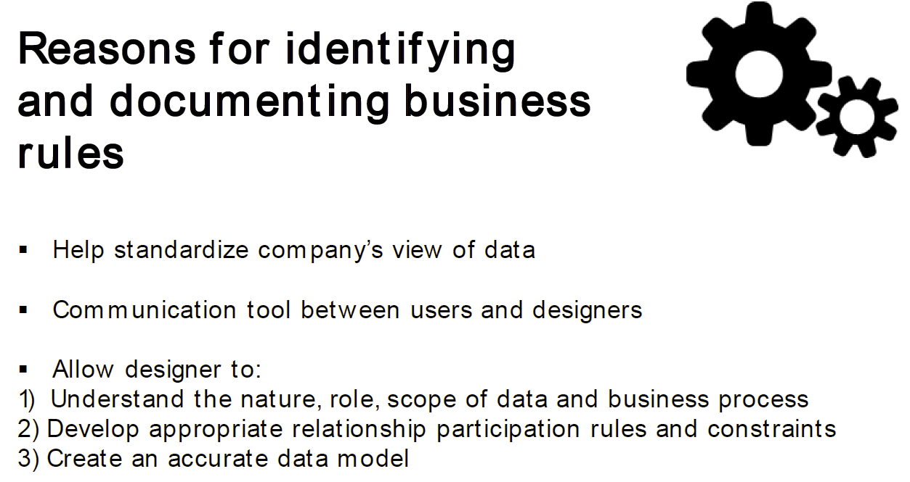
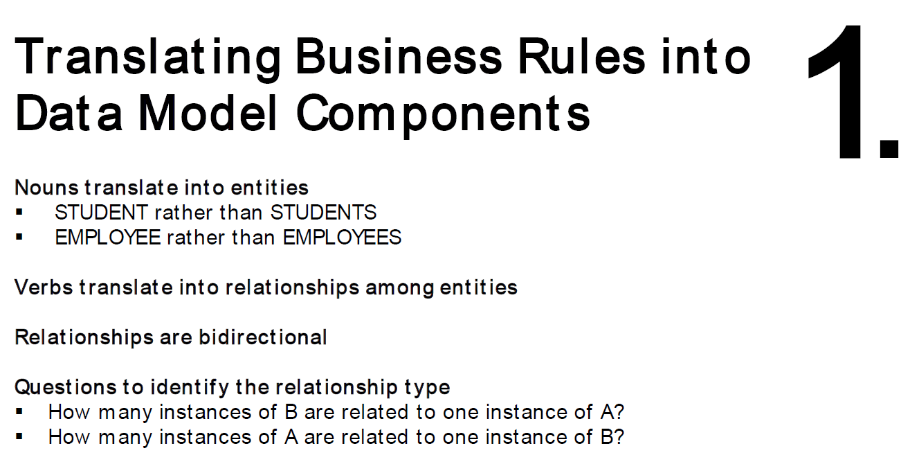
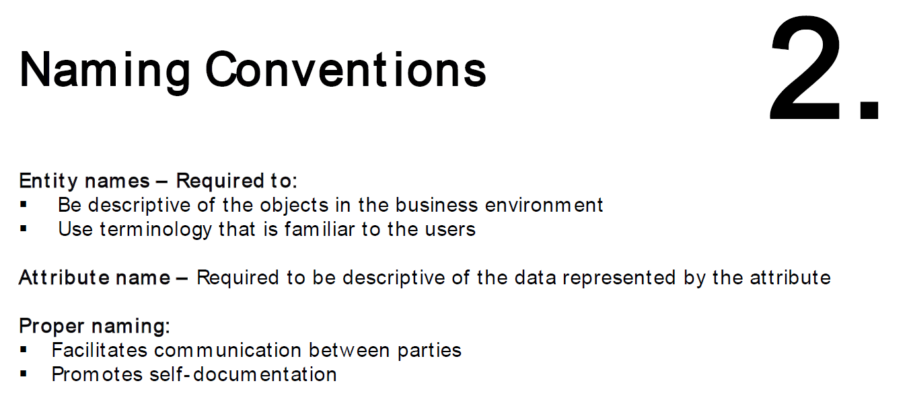
Minimum data rule: All that is needed is there, and all that is there is needed
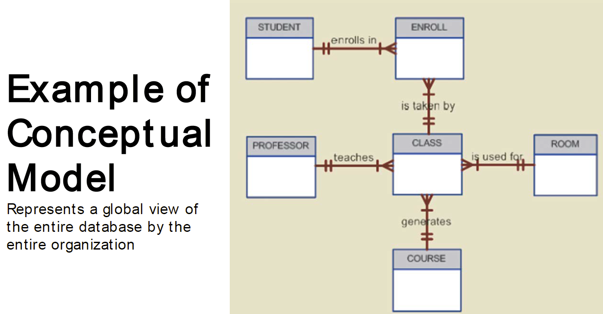
Types of ER-Models
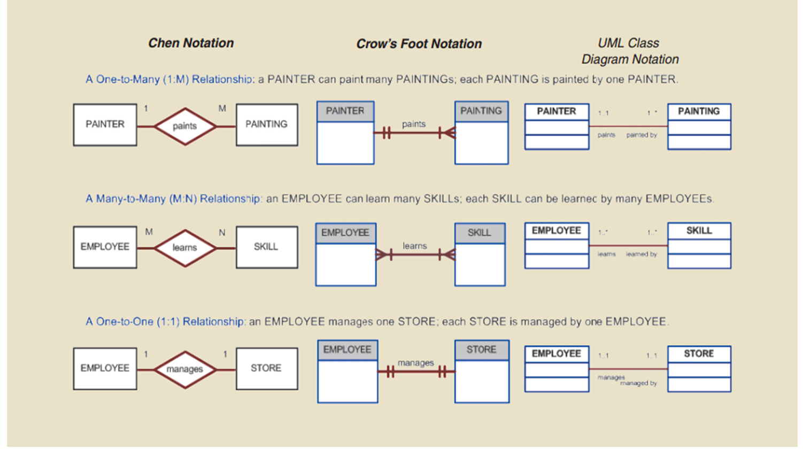
Conceptual Modeling is an iterative process that requires you to constantly revisit your conceptual model and make alterations
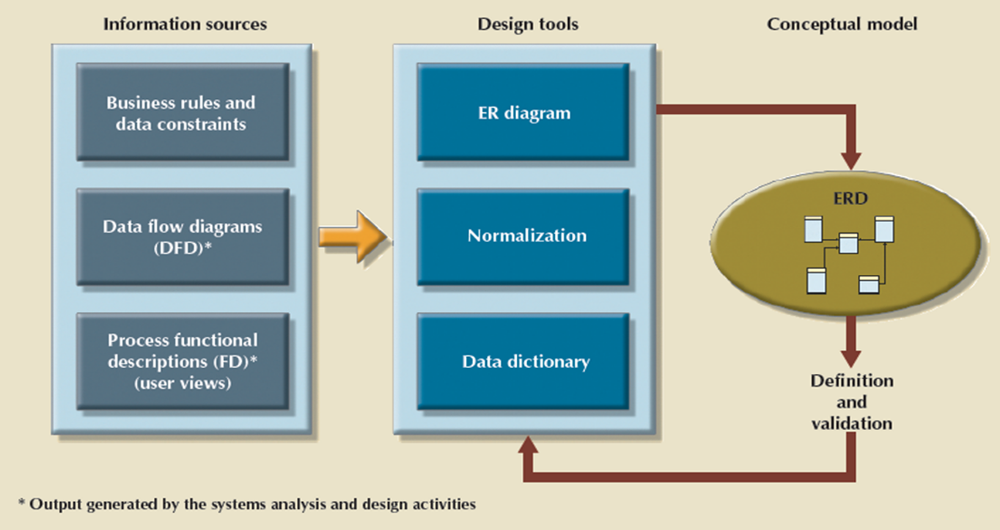
A logical design is a conceptual, abstract design. You do not deal with the physical implementation details yet; you start to define the types of information that you need.
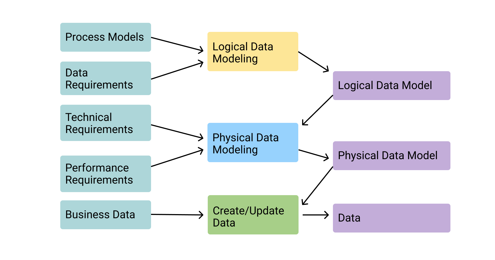
Entities and the Relationships that exist
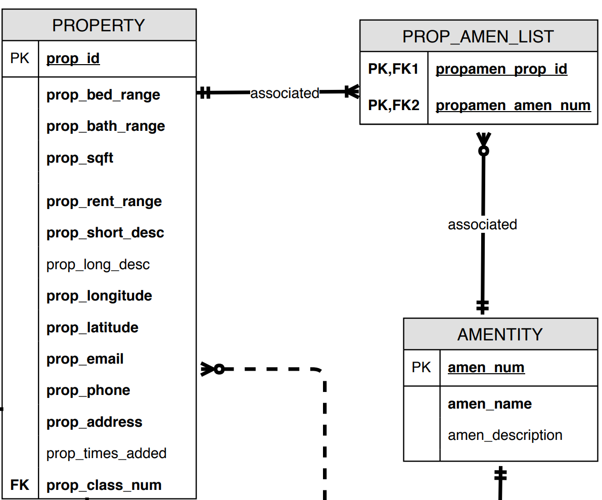
Entity NameEntity StrengthRelationship Strength(Weak and Strong)Primary Key + Foriegn KeyCardinalityNull vs. Not NullSometimes the Data typeEntities and the Relationships that exist
A PROPERTY can be associated with one or more PROP_AMEN_LIST, each PROP_AMEN_LIST can be associated with one PROPERTYWhy is PROP_AMEN_LIST entity needed? Why can't a relationship between AMENTITY and PROPERTY exist? How is relationship strength indicated?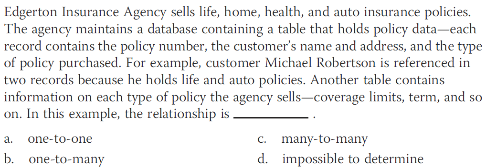
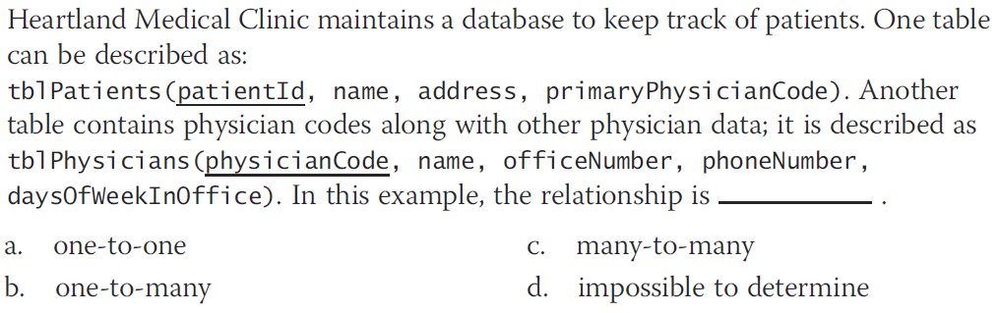
Understanding various keys
Primary Key is a column or group of columns in a table that uniquely identify every row in that tableForiegn Key is a column that creates a relationship between two tablesComposite/Compound is a combination of two or more columns that uniquely identify rows in a tableAlternate Key iis a column or group of columns in a table that uniquely identify every row in that tablesIn a relationship, the many side recieves the foriegn keyThere are so many keys - The difference sometimes equates to what can uniquely identify tuples(a column) or rowsBusiness Rules
Write all relationships depicted between in image above
Draw.io
Practice using draw.io to replicate the entities display above.
MySQL WorkBench Model
Create the Diagram in MySQL workbench
Business Rules
Write all relationships depicted between in image above
Draw.io
Practice using draw.io to replicate the entities display above.
Extending ERD
Consider adding a profile entity
Write the relationship between profile and property
Addend your logical model to include the new entity
[TRUE or FALSE] Data and information are essentially the same thing: